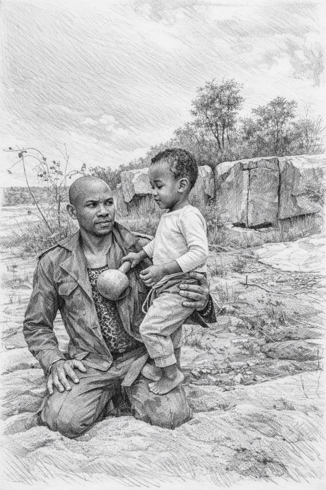

This frame on the wall is more than paper and ink. It is a doorway
back to the words that carried us, the seasons that shaped us, and
the God who never left our side.
Whenever the world feels heavy, come here. Breathe. Read slowly.
Let these memories remind you who you are, where you come from,
and how deeply you are loved.
One day, long ago, you were this small. The ground beneath us was rough,
the future uncertain, but love was steady. This drawing is our witness:
you were held, you were prayed over, and you were deeply wanted.

This is a moment we froze in time. Every time you see it, remember:
you were carried, you are chosen, and you have a place in this family.
Father, thank You for this child. For every step already taken
and every road still ahead. When the storms come, remind him to
kneel, to listen, and to walk with You in every season of life.
If you are reading this on a hard day: pause.
Whisper the simplest prayer you can. Even two words:
“God, help.” That is enough for Heaven to hear.
My road so far — Peter Kutumela
Nathan, this is not just a timeline. It is part of the spiritual journey
that shaped me before you arrived, and the faith I hope you will hold on to.
Timeline
Learning to pray: Life is spiritual—everything that happens, the moments we live in, and what we receive often begin in the spirit before they show up in the natural. Tap to read more.
Growing up, I learned that life is spiritual. Many things do not begin in the natural first. They begin in the spirit, and only later reveal themselves in the life we can see and touch.
I say this because my mother grew up in the ZCC church, which I call the university of spirituality. She used to ask me to go to church, but I had no interest. Then one day she came back from church smiling and said, "My son, I received a prophecy that your time will come. I should leave you alone for now."
And truly, my time came. I began going to church and praying with all my heart. I trusted in the Lord and in the things He revealed to me.
He told me I would get my degree for free, even when I was struggling in high school, and I did. He told me I would drive a silver VW Polo, and five years later I got it. He told me that my firstborn would be a boy, and here you are. He showed me your mother when she was still in varsity, and years later I met her. He told me about my first job, and I got it.
These are only a few examples. God gave me glimpses of my life before I lived it. Many of the things I now hold in my hands, I first received in the spirit.
I share this with you so that you will understand that your life is not random. The fact that I knew about you years before you were born reminds me that your journey, too, is already known by God, waiting for you to walk in it.
"Before I formed you in the womb I knew you." — Jeremiah 1:5
Young man: Working, making mistakes, and learning that God can rebuild what I thought was lost.
"I will restore to you the years that the swarming locust has eaten." — Joel 2:25
The day you arrived: My whole idea of "future" changed. It suddenly had your face.
"Behold, children are a heritage from the Lord." — Psalm 127:3
Hard seasons: Times when I almost gave up, but prayer and family pulled me back.
"Though it tarries, wait for it; for it will surely come." — Habakkuk 2:3
Today: Still learning, still trusting, and trying to build something strong enough for you to stand on.
"Trust in the Lord with all your heart." — Proverbs 3:5
Lord, thank You for every season that shaped me. Thank You that
none of my story is wasted. Use my journey to guide Nathan—so
that he can walk further, make wiser choices, and know You even
more deeply.
Each season above has a verse that walked with me. Hold on to prayer, Nathan.
From your mother, Lerato
Nathan, I am Lerato, your mother. I walked my own road before I joined
the Kutumela family, and God knew that one day our paths would meet in you.
This is a small piece of my story, given to you with love.
A few steps from my journey
Girlhood: Learning to be strong, kind, and careful with the hearts God placed around me.
Becoming Lerato Kutumela: Marrying into this family and learning new ways to love, to serve, and to pray.
The day you were born: My whole understanding of “mother” became real the first time I held you.
Today: Still growing, still trusting God, doing my best to raise you with wisdom and joy.
Lord, thank You for making me Nathan’s mother. Thank You for every tear,
every smile, every late night and early morning. Help me to love him well,
to speak life over him, and to show him what it looks like for a woman to
walk closely with You.
Nathan, one day I will tell you these stories in full. For now, hold on
to this: you were never an accident. You are a gift that changed my life forever.
The people you come from
You are not walking alone. You carry the prayers, strengths, and stories
of both your parents and the Kutumela family with you wherever you go.
Grandparents (their prayers)
Peter Kutumela — Father, prayer warrior, builder
Lerato Ledwaba — Mother, nurturer, rooted in Kutumela
Nathan Kutumela — Son, promise, answered prayer
This is a simple picture for now. One day, we can add names and stories
to every branch, so you can see how far God has carried this family.
Our wish for you, Nathan
More than anything, we wish that you never stop praying. That you walk with God
in every season of life — when storms come, when you feel lost or afraid —
and that you remember: we are always with you in love and in spirit, even when
the world seems dark. Find courage, find peace, and hold fast to faith.
We wish you the strength to do what is right even when it costs you; the humility
to ask for help and the courage to stand when others fall. We wish you a heart
that forgives others and yourself, and that stays soft toward God and toward people.
We wish you work that matters and people who love you for who you are. That you
never forget where you come from — your mom, Lerato, and the Kutumela family —
and that you carry that with pride. And we wish that you achieve more in life:
that you go further than we did, build more, reach higher, and leave a legacy of
faith and love for the next generation. That you build a home where prayer and
love are normal, and where your own children feel safe and seen.
You are our son. Our wish for you is simply this: that you become everything
God has already written over your life.
Open a card
Pick a memory
Not every memory is serious. Some are simply here to make you smile,
laugh, and remember the lighter parts of love.
The funniest day
A memory that should make him smile before he even opens it.
Think of a moment when we laughed so hard we could not breathe.
One day we will write that story here in full, with a photo and the
little details that only family remembers.
Most proud of you
A place for the day courage showed itself clearly.
This space is for the day you chose what was right even when it was hard,
so you can return to that moment and remember your own courage when life
asks it of you again.
Did you know?
A quiet family fact waiting to surprise you.
Did you know there was a time when one of us almost gave up on a dream?
One day we will tell you how God turned that story around, because even
the stories that nearly broke us can become part of our testimony.
Walking inside the promise
Deuteronomy does not live only on paper. In this video, its blessing
and warning are brought into real life — into choices, seasons,
and the quiet places where obedience is tested.
This is your guided walk through Deuteronomy — what it means
to listen, to walk closely with God, and to remember that every step
has a promise and a consequence.
Watch slowly. If a line in the video grips your heart, pause and sit
with it. Ask God what He is saying to you through this chapter, in
this exact season of your life.
Scriptures for heavy days
When your heart feels loud and heavy, come back to these verses.
Read them slowly, out loud if you need to, as if you are breathing them in.
Deuteronomy 28:1–2
“If you listen carefully… all these blessings will come on you.”
Pray: “Lord, teach me to listen and obey today.”
Isaiah 41:10
“Do not fear, for I am with you…”
Pray: “God, I feel afraid, but I choose to trust You.”
Philippians 4:6–7
“Do not be anxious about anything…”
Pray: “Here is what I’m worried about today…” and tell God everything.
Psalm 23:1–3
“The Lord is my shepherd; I lack nothing.”
Pray: “Shepherd, lead me step by step today. Restore my soul.”
Light a candle in your heart
You do not always have to say much. Sometimes all you can do is light a
small flame and sit quietly in its glow. That is also prayer.
Tap below to light a candle for this moment, this season, or this prayer.
Every candle is a quiet “Amen”.